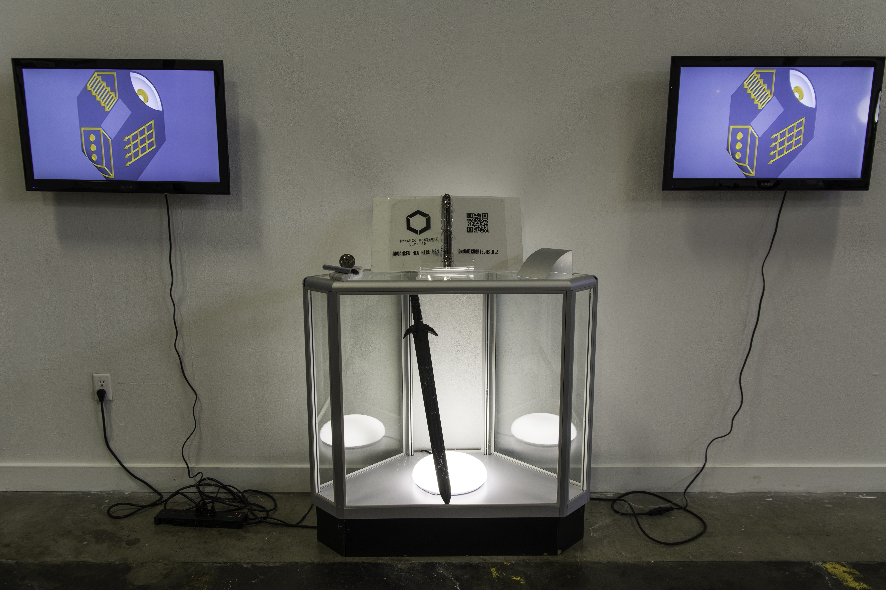
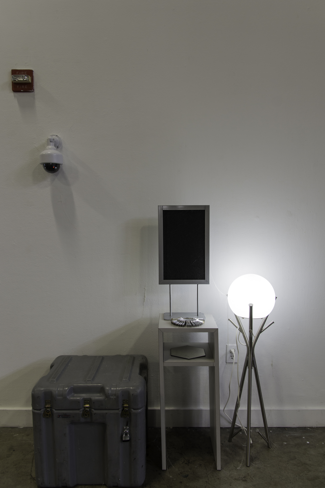
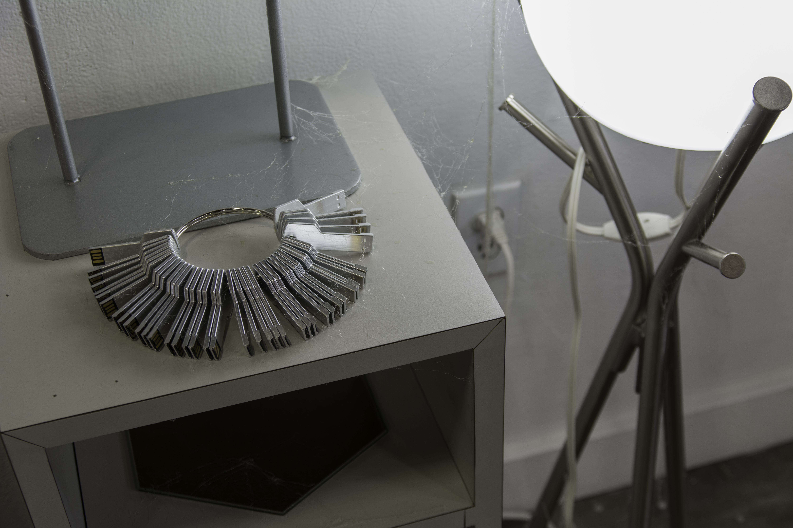
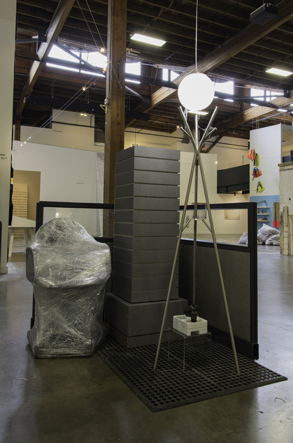
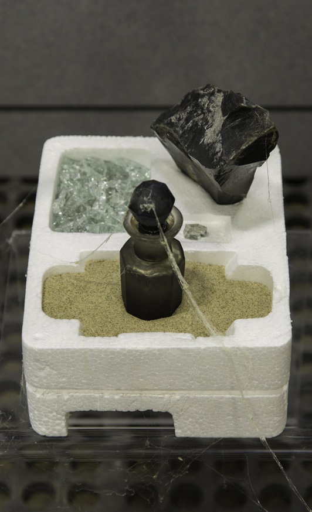
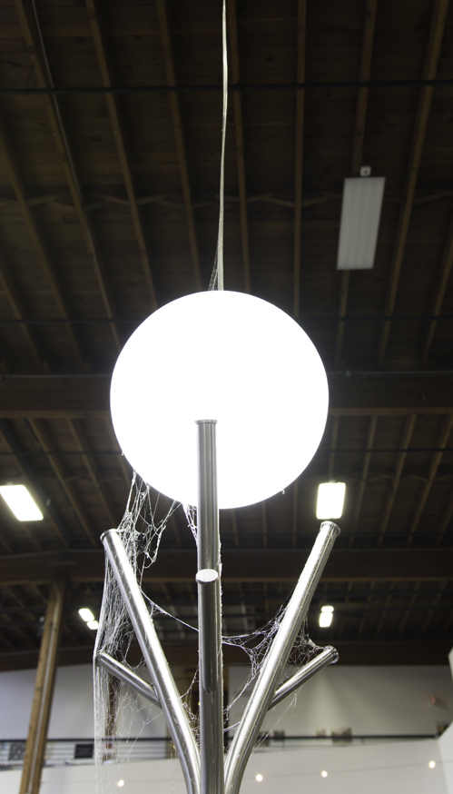
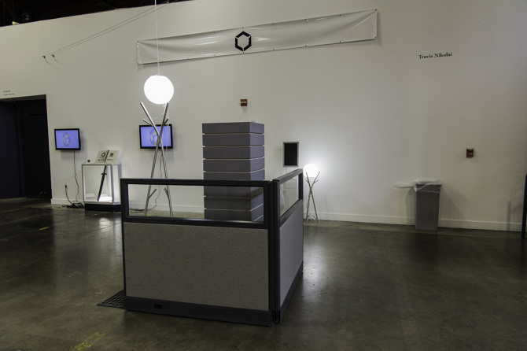

Dynamic Horizons Ltd.
Dynamic Horizons Ltd. is an installation comprised of various office, retail, and
institutional fixtures, fluorescent light, 3D animation, items of occult significance, and
spiderwebs. The installation is a framework for presenting the Dynamic Horizons Ltd.
Advanced New Hire Manual. This manual is the definitive guide to the corporate culture,
policies and procedures of Dynamic Horizons Ltd.
3D animation produced in collaboration with Matthew Leavitt
2014







Excerpt from the Dynamic Horizons Ltd. Advanced New Hire Manual.
"This is a document for coping with the death of before. Our condolences. Before, there
was genre, subculture, counterculture, and transgression. The ways out were clear:
oppositional defiance, or savvy détournement. This became predictable, however, and the
apparatus adapted to those variables, including them in its algorithm. Before, there was
an outside, and now everything is inside.
Nows become befores with rapid incomprehensibility. How did before die and when did it
start? In Space Odyssey, Dr. David Bowman strolls through a Louis the XVI apartment on
Jupiter and encounters himself aging. My avatar waits patiently inside its room in Habbo
Hotel, the server fans locked in an endless exhale. This never changes, but do I? Here I
encounter a vanished before, and its meaning escapes me.
Actuaries in buildings distant tally the events of our Timeline®, and invert them to
forecast our death. We give ourselves to these things so that we may see ourselves
re-presented in new and novel forms. So that we may be marketed our very potential. We
want our products young, but timeless: cutting edge heritage brand. These things must not
fulfill all their promises, however, so that we can be motivated to buy next year's model.
They must be glamorous in all senses of the word.
Nothing of us is entirely our own anymore. The cloud gently, but firmly holds us so that
we needn't fear misplacing ourselves. In its calculus we are mirrored and we are guided.
But you'd still do well to hurry in your rounds.
The competition is fiercer for its confinement."
(Photos courtesy of Bertrand Morin)